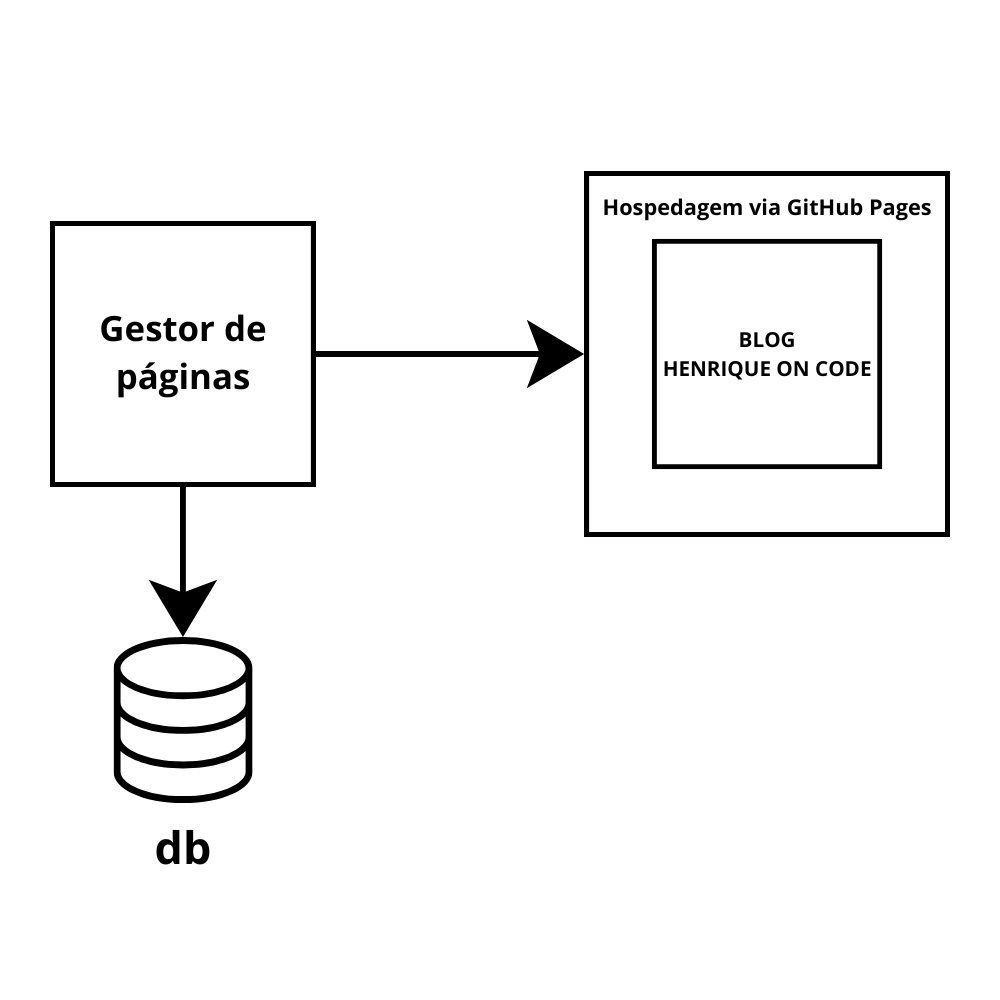

Sobre este blog
Bom dia.
Durante umas andanças que ocorreram na minha vida recentemente, me encontrei em uma nova situação. Sempre gostei de estudar escrevendo em papel, tive muitos e muitos cadernos já, mas o problema deles é que não posso levar todos para qualquer lugar que eu vá.
Com isso em mente, começei a utilizar alguns SaaS (como Notion) para armazenar que eu fosse estudando. Mesmo assim, eu senti que poderia fazer algo mais interessante.
Então tive a idéia de ao invés de apenas armazenar conteúdos em um Notion da vida, eu criasse meu próprio blog, um projeto do zero em que eu poderia literalmente colocar meus estudos (e minhas idéias malucas também) de um jeito que eu tivesse total liberdade para alterar e organizar os conteúdos, de maneira acessível globalmente e que pudesse compartilhar conhecimentos com outras pessoas. Enfim, espero que gostem.
Lembrem-se que em caso de qualquer dúvida, crítica ou sugestão, podem me contatar através do meu e-mail: zs.phenriqueprofessional@gmail.com ou através do meu LinkedIn: https://www.linkedin.com/in/winpenning/.
Sobre mim
Bom. Sou uma pessoa comum, sem nada de muito especial. Vim do meu amado estado de Santa Catarina, no sul do Brasil, e sou apaixonado pela vida.
As coisas que eu mais gosto de fazer são: Viajar (amor fazer hiking e mochilão), estudar, jogar jogos (tanto videogame quanto jogos de tabuleiro), tocar bateria e guitarra.
Eu em um hiking em Grenoble - França
Este projeto em termos técnicos
Agora vamos parar com a parte chata e partir para a ação. Como dito anteriormente, uma das motivações para este projeto é tanto o aprendizado técnico quanto a liberdade total que eu terei no site e na elaboração dos artigos.
A primeira coisa que eu pensei foi na arquitetura do projeto. Queria algo simples e sem muita complexidade (até por que eu vou automatizar a criação técnica dos artigos). A arquiterua atualmente está assim:

Como podem ver, a estrutura é bastante simples. Existindo esses 4 componentes principais.
O primeiro deles é o Blog que é esse site que vocês estão acessando agora é estático e não tem muita complexidade. Kit padrão de frontend e React.
O blog por sua vez é hospedado em um serviço de hospedagem estática, o GitHub Pages. Basicamente, ao subir alguma modificação em determinada branch, o deploy é feito de maneira automática.
Temos também o Gestor de páginas (que é a minha parte favorita). Basicamente, é uma aplicação local minha que eu jogo o conteúdo do artigo, o título e imagens. A partir disso, ele cria uma nova página para esse blog com todas as tags de maneira que eu não tenha que alterar manualmente o frontend. Após isso ele automaticamente, sobe essa nova página no meu repositório, fazendo com que assim, vá direto para o site hospedado.
Assim o único trabalho que tenho (se não quiser criar algo mais manual e específico) é apenas escrever o conteúdo que eu quero e clicar em "Salvar e publicar" que o Gestor de páginas faz o resto.
E claro, além de criar e publicar a página no meu blog, ele também salva essa informação em um banco de dados local no momento.
Bom. Espero que tenham gostado deste primeiro artigo. No mais, no caso de qualquer dúvida, não hesitem em me contatar e até a próxima :)